2026 French/German Adsorption Conference
Scope and Context
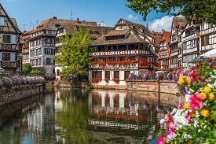
Held in Strasbourg (France) between Oct. 24, 2023 and Oct. 26, 2023, this first joint, binational meeting on adsorption is organized by
the FRA/GER adsorption initiative -- with support from the French and German Adsorption Societies.
This city, which is ideally located near the French/German border, provides a great venue for such
a scientific conference. More details on conference organization will be provided later but
please already mark the dates in your calendar.
- Characterization of porous materials/adsorbents
- Thermodynamics and kinetics of adsorption
- Gas phase processes
- Liquid phase processes and chromatography
Organization details
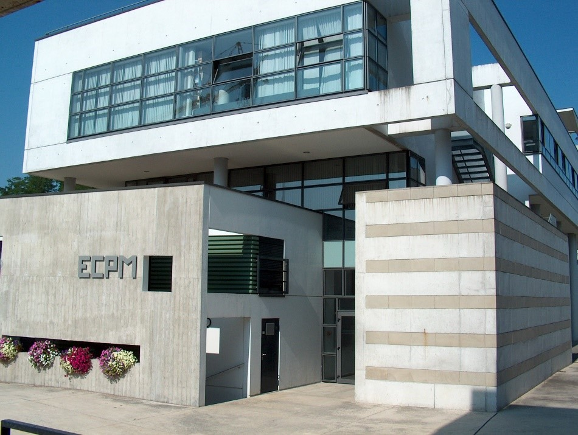
The conference will be hosted within the premises of the European School of
Chemistry, Material and Polymer of Strasbourg. The conference will start after lunch on Tue. Oct. 24, 2023
and will close on Thu. Oct. 26 around noon (a lunch bag will be provided). A combined wine/cheese and beer/bretzel event
will be organized on the first evening while a social gala dinner will be organized for registered guests on the second evening.
Click here for some photos taken during the conference
Program
A preliminary version of the conference program can be downloaded here: PDF
Invited Speakers
- Christian Bläker (University of Duisburg-Essen), "Methods for Characterization of Activated Carbons, Zeolites and Silica Gels"
- Gabriele Iffland (BASF SE), "Industrial Applications of Liquid Phase Adsorption"
- Cécile Lutz (Arkema), "Zeolithes for sustainable development"
- Carlos Nieto-Draghi (IFP Energies Nouvelles), "A new class of descriptors for nanoporous materials and its applications to Classification and CO2 gas adsorption into zeolites"
Sponsors
- Main sponsors
BASF Silica VT 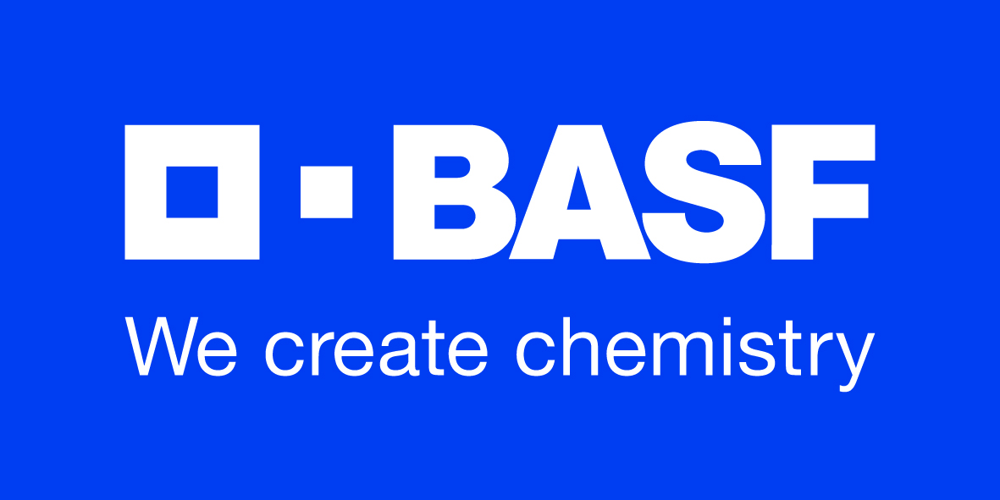 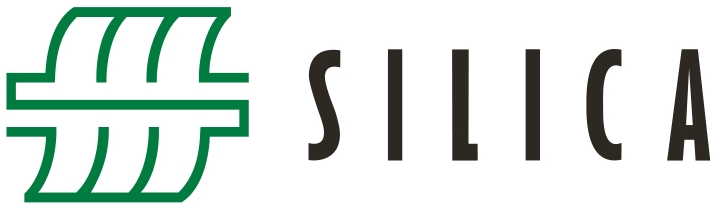 - Sponsors
CWK Bad Köstritz Micromeritics 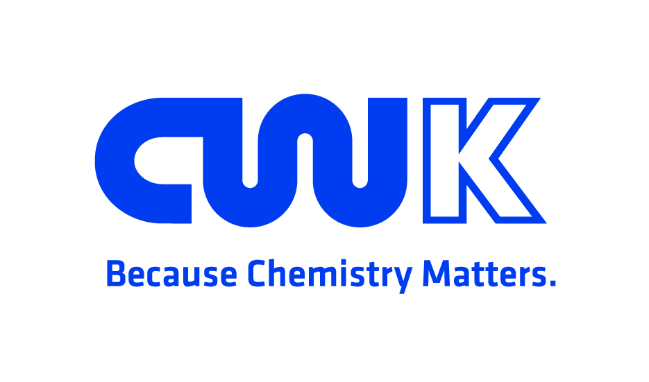 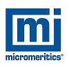 - Exhibitors
Anton Paar Micromeritics Hiden Isochema 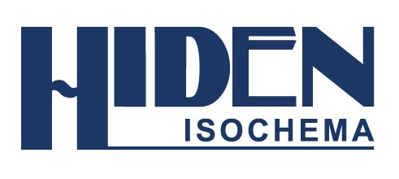 3P Instruments Knauer 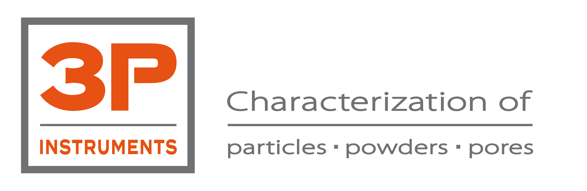 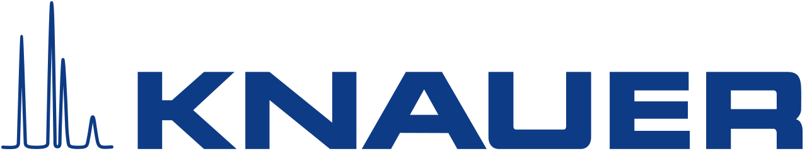 Microtrac MRB Surface Measurement Systems 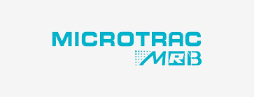 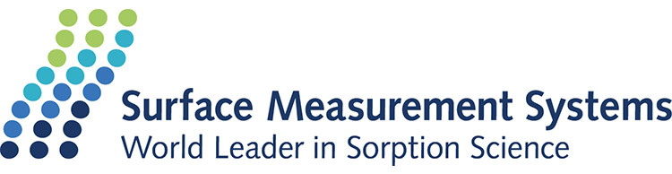 - Supports
DECHEMA French Adsorption Society (AFA)